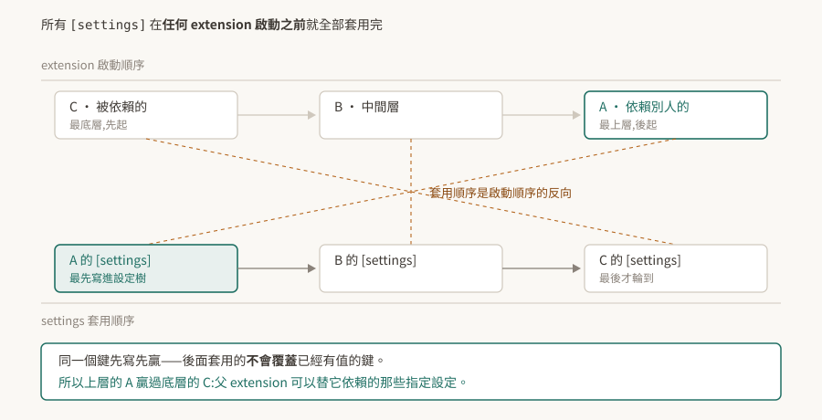

03 · carb settings:設定樹、先寫先贏,以及官方沒寫全的優先序
Kit 應用的行為幾乎都掛在同一棵設定樹上:視窗開不開、算圖用哪個後端、extension 去哪裡找、日誌多囉嗦。改它的方式有好幾種——命令列、.kit 檔、extension.toml、使用者設定檔——而它們碰在一起的時候誰贏,是這一層最常被問、也最容易搞錯的事。
先講結論:同一個 extension 相依鏈上的 [settings] 是「先寫先贏」,而且套用順序是啟動順序的反向;至於命令列、.kit、使用者設定檔之間的完整優先序,官方文件沒有寫成一份完整表述(§7)。

驗證狀態:本篇引用處給逐字原文。本 repo 沒有 Kit 環境,全篇未實機驗證,§8 是待驗清單。§4 是一段推論,已在文中標明它是推論而非官方直述。
1. 根本問題:幾百個旋鈕放在哪
應用由幾百個 extension 組成(02)之後,設定會遇到一個結構問題:每個 extension 都有自己的旋鈕,而使用者、應用作者、extension 作者都想調同一批。
各自存各自的檔會導致沒有人能一次看到全貌,也沒辦法從外面覆蓋。Kit 的做法是反過來:只有一棵樹,所有人都往同一棵樹寫,差別只在什麼時候寫、寫的優先權多高。
2. 設定樹:一個巢狀字典
官方對它的定義很直白:
"Settings is a runtime representation of typical configuration formats (like json, toml, xml), and is basically a nested dictionary of values."
一個巢狀字典,鍵用 / 分層,例如 /app/exts/folders。TOML 裡寫成 app.exts.folders,命令列寫成 --/app/exts/folders,指的是同一個位置。
extension.toml 的 [settings] 段寫進去的東西落在樹根:
"Everything under this section is applied to the root of the global Carbonite settings (
carb.settings.plugin)."
慣例上 extension 自己的設定放在 exts 命名空間底下、再接 extension 名,避免撞名也方便查找。
3. [settings] 是先寫先贏
這是本篇最值得記住的一條,而且與直覺相反。官方原文:
"An important detail is that settings are applied in reverse order of extension startup (before any extensions start) and they don't override each other."
拆成三件事:
一、時機。 所有 [settings] 在任何 extension 啟動之前就套用完了。不是「輪到某個 extension 啟動時才套用它的設定」。所以 extension 在 on_startup 裡讀到的設定樹已經是最終狀態,包含那些啟動順序排在它後面的 extension 所寫的值。
二、順序。 套用順序是啟動順序的反向。
三、不覆蓋。 後套用的不會蓋掉已經有值的鍵。
三件事合起來就是先寫先贏:反向套用讓啟動順序靠後的 extension 先寫,而先寫的那個贏。官方接著給了這個設計的用途:
"Therefore a parent extension can specify settings for child extensions to use."
父 extension 可以替它依賴的那些指定設定。這解釋了為什麼要設計成「不覆蓋」——如果後寫的會蓋掉先寫的,底層 extension 的預設值就會蓋掉上層應用的指定,而那是反的。
實務上的意義:你的 .kit 應用檔寫的值,勝過它拉進來的那些 extension 自己的預設。 想調某個 extension 的設定,寫在自己的應用檔裡就有效,不必去改對方的 extension.toml。
4. 由此推得的啟動順序
02 §3 留了一個沒有結論的問題:官方說啟用時「all dependents are enabled first」,而 dependent 一詞照字面是「依賴別人的那一方」,與「被依賴者先準備好」的預期相反。
§3 這段機制可以把它推出來,推論如下,尚未實測:
官方說父 extension 能替子指定設定,而這件事只有在「父的 [settings] 先寫進去」時才成立。先寫要靠反向套用,反向套用要成立的話,父在啟動順序上必須排在後面。也就是:
被依賴的先啟動,依賴別人的後啟動。
兩段官方敘述只有在這個讀法下彼此自洽。這也符合可用性的直覺——被依賴的東西要先準備好。
這是推論,不是官方直述。 驗法在 02 §8 第 1 條:讀 log 裡 [ext: ...] startup 的先後即可判定。在驗到之前,凡是依賴啟動順序的結論都要標明它建立在這個推論上。
5. 命令列 --/ 的形狀
任何設定都能從命令列改:
"Any setting can be changed via command line using
--/prefix"
格式是 --/[path/to/setting]=[value],路徑用 / 分層並以 --/ 開頭。
陣列有兩種寫法:指定單一元素的索引,或整包給值 [value0,value1,...]。布林值大小寫不拘,true / false 可用,0 / 1 也會被當成整數轉過去。
順帶記一下日誌旗標:-v 開 info、-vv 開 verbose。排查設定沒生效時,這兩個通常比猜快。
6. /persistent:會活過這次啟動的那些
"All settings stored in a
/persistentnamespace persist between sessions. They are automatically stored to and loaded from user config."
/persistent 底下的東西會自動存進使用者設定檔,下次啟動再載回來。命名空間本身就是開關,不需要另外宣告。
這帶來一個排查上的陷阱:同一台機器上「上次改過的值」會活著回來。在 A 機器重現不了 B 機器的問題時,兩邊的使用者設定檔是第一個要比對的地方,而不是程式碼。反過來說,要確保實驗乾淨,得先確認 /persistent 底下沒有殘留的舊值。
7. 完整的優先序,官方沒有寫全
.kit 檔、extension.toml、使用者設定檔、命令列、環境變數碰在一起時誰贏——本 repo 沒有在官方文件裡找到一段完整陳述這件事的文字。
查過的地方:kit-manual 的 Configuration 頁、dev-guide 的 Settings 頁、kit-manual 的 Extensions in-depth 頁。找到的是分散的片段:--/ 可以改任何設定、系統層級的設定檔可以覆蓋任何設定、[settings] 在相依鏈上先寫先贏(§3)。這幾條拼不出一張完整的優先序表。
這是「本 repo 查到的」,不是「官方沒有」。 不排除寫在別的頁面或別的版本。真的需要一個確定的答案時,量比查快:
# 一、跑一個腳本把設定樹讀出來寫成檔案,跑一幀就退出
kit <你的.kit檔> --exec dump_settings.py --/app/quitAfter=1
# 二、同一個鍵,從兩個入口各給一次不同的值,看哪個留下來
kit <你的.kit檔> --exec dump_settings.py --/app/quitAfter=1 \
--/exts/my.ext/threshold=999
--/app/quitAfter=<幀數> 是官方的旗標,跑滿指定幀數就離開主迴圈,適合這種只要一份快照的用途。
腳本那一側,官方說明是「You can interact with App, Extension, and User settings using the ISettings interface from the carb.settings module」。本 repo 沒有查證具體的函式名與讀取整棵樹的寫法,寫腳本時以手上版本的 carb.settings API 文件為準。
單變數對照:一次只改一個入口,看讀出來的值是哪一個。要判定的入口有五個,兩兩比較即可排出全序。
⚠ dump 出來看得到某個鍵,不代表 runtime 真的照它跑。 這是 Kit 這一層的第三種常見假象——寫得進去不等於被採用。要證明某個設定真的生效,把它設成一個極端值,看行為有沒有跟著變。
8. 待驗清單
| # | 待驗的斷言 | 怎麼驗 | 什麼算通過 |
|---|---|---|---|
| 1 | [settings] 先寫先贏(§3) |
做兩個 extension,父依賴子,兩邊的 [settings] 寫同一個鍵不同值,啟動後讀該鍵 |
讀到父寫的值 |
| 2 | 設定在任何 extension 啟動前就套用完(§3) | 在最先啟動的 extension 的 on_startup 裡讀一個只由最後啟動者宣告的鍵 |
讀得到值 |
| 3 | 被依賴者先啟動(§4 的推論) | 讀 log 裡 [ext: ...] startup 的先後 |
被依賴的那個先出現 |
| 4 | 五個入口的完整優先序(§7) | 單變數對照,兩兩比較 | 排得出一個穩定的全序 |
| 5 | /persistent 會跨 session 留存(§6) |
設一個 /persistent/... 的值,關掉重開再讀 |
值還在,且能在使用者設定檔裡找到 |
| 6 | dump 得到不等於生效(§7 的警語) | 挑一個有可觀察行為的設定,設極端值 | 行為跟著變才算生效 |
第 4 條做完就能補一張優先序表回 §7,那是這一篇目前最大的缺口。